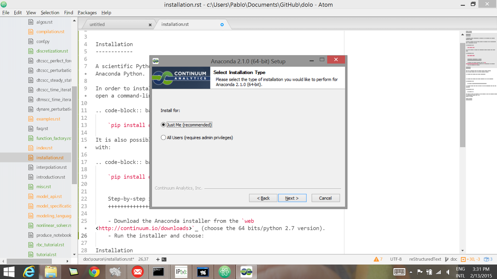
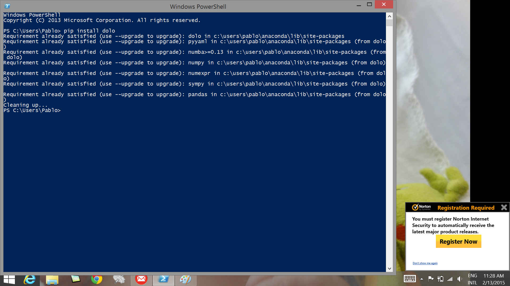

Getting started¶
Installation¶
A scientific Python environement is required to run dolo, for instance Anaconda Python.
In order to install the last stable version of dolo and its dependencies, open a command-line and run:
`pip install dolo`
It is also possible to install the development version directly from Github with:
`pip install git+git://github.com/econforge/dolo.git`
Step-by-step instructions on windows¶
- Download the Anaconda installer (choose the 64 bits/python 2.7 version)
- Install it for the current user only, so that you will be able to install to update Python packages easily.
Anaconda’s installer
- Open a powershell console, and type
pip install dolothen Enter. When connected to the net, this command pulls and install the last stable versionDolo install command
{kind=link}
{kind=link}
Running dolo¶
After dolo is installed, try to solve a model by typing the following commands in an IPython shell:
from dolo import * # load the library
model = yaml_import("https://github.com/EconForge/dolo/blob/master/examples/models/rbc.yaml")
# import the model
display(model) # display the model
dr = time_iteration(model, verbose=True) # solve
sim = simulate(model, dr) # simulate
Setting up a work environement¶
Anylising dolo models, is usually done by editing a model file with an (.yaml) extension, then running and formating the calculations inside a Jupyter notebook. There are many other worflows, but Jupyter notebooks are becoming a de facto standard in opensource computational research, so that we strongly advise to try them first. Some chapters of this documentation are actually written as notebook, can be downloaded and run interactively.
The only step to setup the environment consists in choosing a folder to store the model and the notebooks. Then open a terminal in this folder and launch the notebook server using:
`ipython notebook`
{kind=link}
Open shell under windows in a given folder
A browser window should popup. It is Jupyter’s dashboard.
{kind=link}
Jupyter’s dashboard
It lists the files in that folder. Clicking on a model file (with a .yaml extension), opens it in a new tab.
{kind=link}
Jupyter’s text editor
Note
Despite the fact that the files are edited in the browser through a local webserver, the files are still regular files on the harddrive. In particular, it is possible to edit them directly, using a good text editor (vim, emacs, atom...)
To create a new notebook click on ”..” and choose IPython. This creates a new tab, containing the notebook ready to be edited and run. It consists in a succession of cells that can be run in any order by pressing Shift+Enter after one of them has been selected. More information [TODO: link]
{kind=link}
Jupyter notebook